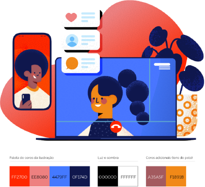

Explorando o Poder do Flexbox para Layouts Modernos (Elemento Media → Text)
A novidade desse site está na forma como os elementos se comportam ao atingir um ponto de quebra. Cada seção do main possui dois conteúdos lado a lado: texto e mídia (imagem ou vídeo). Mas, quando o espaço horizontal não é suficiente, os elementos se organizam verticalmente — e o mais interessante: com a ordem invertida.
